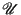
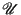
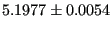

Next: Radial Distribution Functions and Up: Case Study 2: Static Previous: Running the code
An important purpose of this case study is to quantify the notion of “equilibration” of the system by assessing correlations in (apparently) randomly fluctuating quantities like potential energy. Remember, in order to perform accurate ensemble averaging over an MD trajectory, we have to be sure that correlations in the properties we are measuring have “died out.” This is another way of saying that the length of the time interval over which we conduct the time average must be much longer than the correlation time. In this case study, we illustrate the “block averaging” technique of Flyvbjerg and Petersen [7] to determine the equilibration time-scale of the potential energy.
First, compute the variance of the  samples of
:
samples of
:
| (155) |
| (156) |
flyvberg.py implements this calculation using outputs of mdlj.c as inputs.
|
|
According to the discussion of this blocking technique, the standard
deviation shows a dependence on the blocking degree,  , when the
blocked averages are correlated, and plateaus at a blocking degree for
which the averages become uncorrelated. This blocking degree
corresponds to a time interval of length . This data indicates
that potential energy decorrelates after a time of approximately
steps. This is a reassuring result, as we could
have guessed that 1000 steps are required based on the initial
transience in the energy traces seen in the previous figure. I ran
three independent simulations, each differing only in the random
number seed used. The results are shown in Table 1.
, when the
blocked averages are correlated, and plateaus at a blocking degree for
which the averages become uncorrelated. This blocking degree
corresponds to a time interval of length . This data indicates
that potential energy decorrelates after a time of approximately
steps. This is a reassuring result, as we could
have guessed that 1000 steps are required based on the initial
transience in the energy traces seen in the previous figure. I ran
three independent simulations, each differing only in the random
number seed used. The results are shown in Table 1.
| Run | ||||
| 1 | ||||
| 2 | ||||
| 3 | ||||
| Avg. |  |
cfa22@drexel.edu